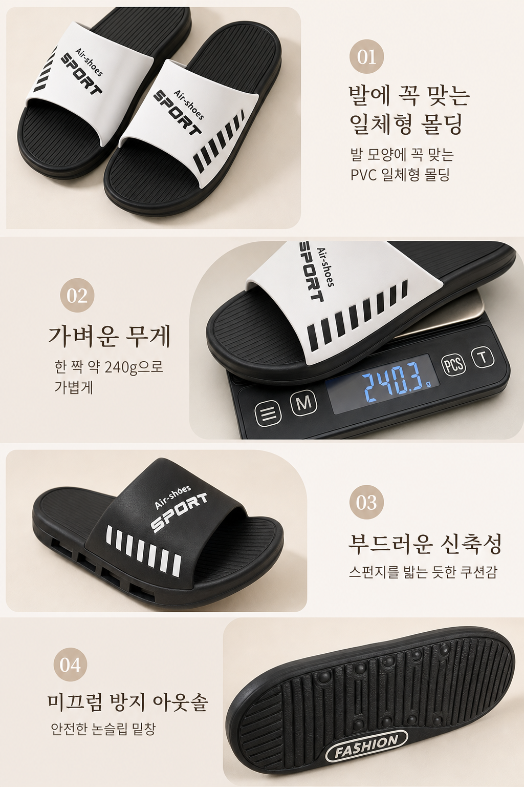
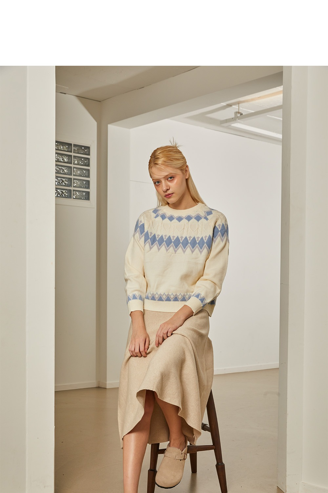
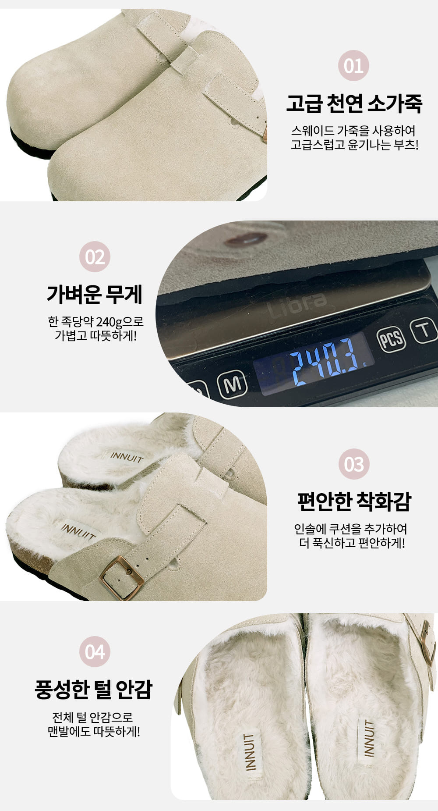
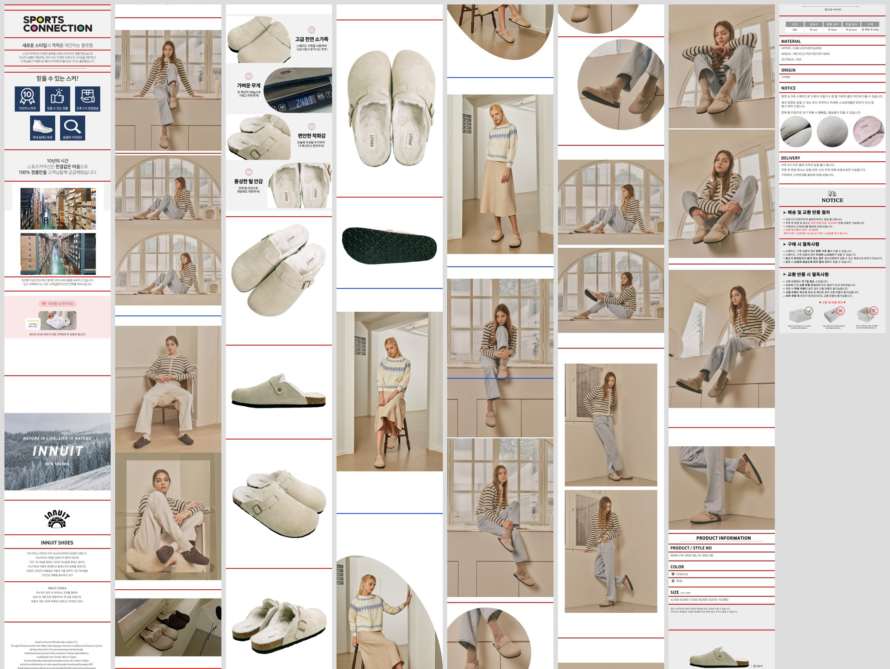

1. 조립된 v10 페이지 ds
에디토리얼 라이프스타일 + 피처 콜아웃 카드를 2:3로 생성해 세로로 스택. INNUIT의 웜베이지 톤을 입은 내 슬리퍼.


2. ds vs non-ds — 라이프스타일 카드(하드: 모델 발 착용 교체)
제일 어려운 케이스. 모델 발의 털클로그 → 내 오픈 스포츠슬라이드 교체. 사진 자체가 웜무드라 ds·non-ds 차이는 작음.
INNUIT 원본대상

v10-non-dsDS 없음

v10-ds스타일보드 앵커
3. ds vs non-ds — 피처 콜아웃 카드(중난도: 텍스트+제품)
4단 콜아웃 레이아웃·번호뱃지 복제 + 제품/카피 교체. 여기서 DS 효과가 큼 — non-ds는 웜톤 소실, ds는 베이지 무드 복원.
INNUIT 원본대상

v10-non-ds흰배경·톤 소실

v10-ds웜베이지 복원
관찰 정리
- i2i 엔진 openai/gpt-image-2/edit — 한글 텍스트·레이아웃 충실 복제 확인
- 제품 교체 피처샷·저울샷·아웃솔·모델 착용까지 적응 (착용샷은 제품 디테일 근사)
- DS 가치는 카드 종류별로 다름 — 그래픽/피처 카드엔 큼(톤 복원), 라이프스타일엔 작음(사진이 이미 무드 보유)
4. 분할 검증 — 여백 컷 (대상 총 46,304px)
대상 11장(최대 7,000px)을 여백 띠에서 자름. 빨강=섹션 컷, 파랑=2:3 강제 하드컷(콘텐츠 관통 6/71).
